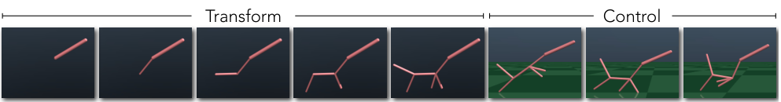
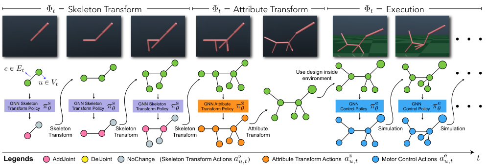
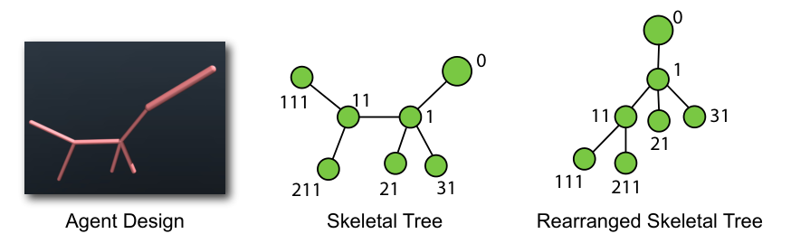
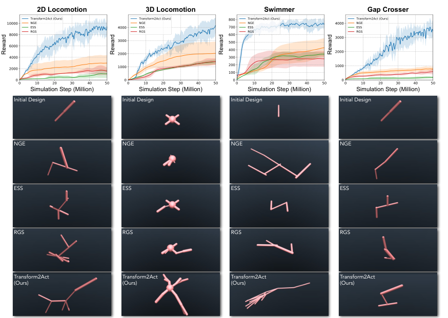
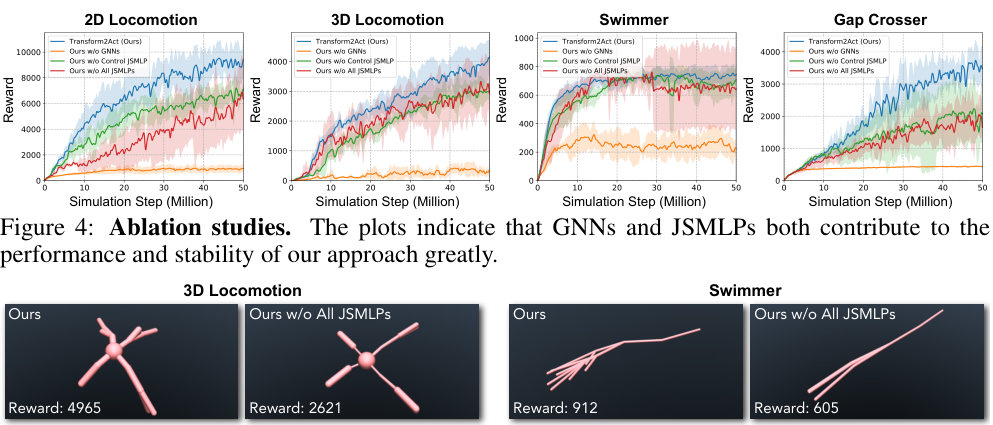
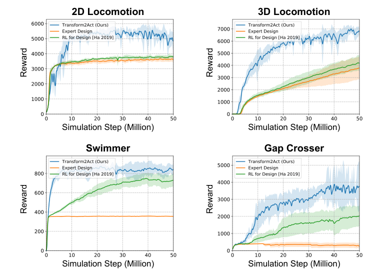

Background & Motivation
Transform2Act 把「設計一個 agent 的身體」直接塞進「它的決策過程」:每個 episode 先跑一段transform 階段(GNN 策略逐步加/刪關節、調整骨長/粗細/馬達強度,不與環境互動),再進入 execution 階段用同一個策略去控制這個新身體並收 reward。形態與控制於是被 PPO 在單一迴圈裡聯合優化,且所有設計共享同一份經驗;在 4 個 MuJoCo 任務上以相同 5,000 萬模擬步預算,收斂速度與最終表現都明顯勝過 NGE、ESS、RGS 等演化式搜尋,還長出長頸鹿、蜘蛛、魷魚般的形態。
Transform2Act folds "designing an agent's body" directly into "its decision-making process": each episode starts with a transform stage (a GNN policy adds/removes joints step by step and tunes bone length/size/motor strength, without touching the environment), followed by an execution stage where the same policy controls the new body and collects reward. Morphology and control are thus jointly optimized by PPO in a single loop, with all designs sharing one pool of experience. On four MuJoCo tasks it clearly beats evolutionary search (NGE, ESS, RGS) in both convergence speed and final performance under the same 50M-simulation-step budget, and grows giraffe-, spider- and squid-like bodies.

如果只有 30 秒In 30 seconds
- 問題 — 同時優化骨架結構與關節屬性是組合爆炸 + 雙層(bi-level)的問題:外層搜尋巨大設計空間,內層每個候選設計都要先用 RL 訓練控制器才能評分。主流演化搜尋(ES)各設計各自訓練、不共享經驗,被淘汰者的樣本全部浪費。
- Problem — Jointly optimizing skeletal structure and joint attributes is combinatorial and bi-level: an outer search over a huge design space, and an inner RL run to train a controller before each candidate can even be scored. The dominant evolutionary search (ES) trains each design independently with no experience sharing, wasting every sample spent on eliminated agents.
- 方法 — 把設計動作變成 MDP 的一部分:三階段條件策略 \(\pi_\theta=(\pi^{s}_\theta,\pi^{z}_\theta,\pi^{e}_\theta)\)(骨架變換 → 屬性變換 → 執行),全部用 GNN 處理可變關節數,再加 Joint-Specialized MLP(JSMLP)打破權重共享造成的過度對稱;transform 階段 reward 為 0,只靠未來執行回報經由 PPO 學習。
- Method — Make design actions part of the MDP: a three-stage conditional policy \(\pi_\theta=(\pi^{s}_\theta,\pi^{z}_\theta,\pi^{e}_\theta)\) (skeleton transform → attribute transform → execution), all GNN-based to handle variable joint counts, plus a Joint-Specialized MLP (JSMLP) to break the over-symmetry caused by weight sharing. Transform steps get zero reward and learn only from future execution returns via PPO.
- 結果 — 4 個環境(2D/3D Locomotion、Swimmer、Gap Crosser)、各 6 seeds、同為 50M 步:最終 reward 約為最強基線 NGE 的 1.7–4.7 倍(由圖讀值);消融顯示拿掉 GNN 幾乎學不起來,拿掉 JSMLP 明顯掉分且變不穩。
- Results — Four environments (2D/3D Locomotion, Swimmer, Gap Crosser), 6 seeds each, 50M steps each: final reward is roughly 1.7–4.7× the strongest baseline NGE (read off the plots). Ablations show that without GNNs it barely learns, and without JSMLPs it scores clearly lower and becomes unstable.
領域脈絡Field context
「形態-控制共同設計」(morphology-control co-design)可追溯到 Sims(1994)的 Evolving Virtual Creatures:用演化搜尋同時演化 3D 方塊生物的身體與控制。後續 Cheney 等人用體素降低搜尋空間,Wang 等人(2019)的 NGE 再用 GNN 讓子代繼承親代權重。這一脈的共同點是零階(zeroth-order)搜尋 + 族群各自學習,樣本效率低。
"Morphology-control co-design" traces back to Sims (1994), Evolving Virtual Creatures, which evolved both the bodies and controllers of 3D block creatures. Cheney et al. later used voxels to shrink the search space, and Wang et al. (2019) with NGE used GNNs so offspring inherit parent weights. The common thread is zeroth-order search plus a population that learns independently, which is sample-inefficient.
另一脈是只調連續參數、不改拓撲:Ha 等人(2017/2018)與 Desai 等人(2018)用軌跡優化 + 隱函數定理/adjoint 調整腿式機器人尺寸;深度 RL 時代則有 Ha(2019)、Schaff 等(2019)、Luck 等(2020)、Chen 等(2020, Hardware as Policy)。這些方法無法改變骨架結構。同時,GNN 控制器(NerveNet、SMP)證明了一個策略可以跨不同骨架共用——這正是 Transform2Act 能成立的技術前提。
A second thread tunes only continuous parameters, keeping the topology fixed: Ha et al. (2017/2018) and Desai et al. (2018) adapt legged-robot dimensions with trajectory optimization + the implicit function theorem / adjoint method; in the deep-RL era there are Ha (2019), Schaff et al. (2019), Luck et al. (2020), Chen et al. (2020, Hardware as Policy). These cannot change the skeletal structure. Meanwhile, GNN controllers (NerveNet, SMP) showed that one policy can be shared across different skeletons—the technical precondition that makes Transform2Act possible.
這篇的關鍵一步是把「外層設計搜尋」降維成「episode 前幾步的動作」。一旦設計變成動作,整套 RL 工具(policy gradient、value function、advantage、經驗共享)就能直接拿來用,而不再需要一個外部的演化迴圈。[導讀補充] 這跟 NAS 從「演化搜尋架構」走向「用 controller RNN 產生架構」是同一種轉向。
The key move is collapsing the "outer design search" into "the first few actions of an episode." Once design becomes action, the whole RL toolkit (policy gradients, value functions, advantages, experience sharing) applies directly, with no external evolutionary loop. [guide note] This mirrors NAS moving from evolutionary architecture search to "a controller RNN that emits architectures."
核心洞見 · KEY INSIGHTSKEY INSIGHTS
值得帶走的不是「又一個 co-design 方法」,而是這幾個觀念:
What to take away is not "yet another co-design method" but these ideas:
- 設計即動作(design-as-action)。 雙層問題 \(\max_D J(\pi_D,D)\) 被改寫成單層的策略學習:設計由策略在 episode 開頭「選」出來,形態與控制在同一個 PPO 目標下一起進步。
- Design-as-action. The bi-level problem \(\max_D J(\pi_D,D)\) becomes single-level policy learning: the design is "chosen" by the policy at the start of the episode, and morphology and control improve together under one PPO objective.
- 零 reward 的 transform 階段也學得起來。 transform 步驟本身沒有 reward,設計的好壞只能透過 value function 的 bootstrapping 從執行階段的回報傳回來——critic 實際上學會了「評估一個身體的潛力」。
- A zero-reward transform stage still learns. Transform steps get no reward; design quality flows back from execution returns only through value-function bootstrapping—the critic effectively learns to "assess a body's potential."
- 經驗共享是樣本效率的來源。 所有設計共用一個控制策略,所以 50M 步全部用來訓練同一個策略;NGE 中每個物種只分到 \(EM/N\) 的樣本。每個 epoch 還能試 超過 2000 個設計(NGE 僅 16–100 個)。
- Experience sharing is where the sample efficiency comes from. All designs share one control policy, so all 50M steps train the same policy; in NGE each species gets only \(EM/N\) samples. Each epoch can also try over 2000 designs (NGE: 16–100).
- 權重共享是雙面刃。 GNN 的權重共享讓策略能泛化到新骨架,但也讓相似位置的關節做出相同的 transform 動作,導致過度對稱。JSMLP 依「從 root 走到該關節的路徑」給每個關節專屬權重,在泛化與專門化之間取平衡。
- Weight sharing cuts both ways. GNN weight sharing lets the policy generalize to new skeletons, but also makes joints in similar positions take identical transform actions, causing over-symmetry. JSMLP gives each joint its own weights, indexed by the root-to-joint path, balancing generalization and specialization.
- 「設計得出來」不等於「造得出來」。 長頸鹿、魷魚都是 MuJoCo 裡的膠囊棍子+理想 hinge 馬達;沒有製造、質量、致動器或 sim-to-real 的約束。對真實腿式機器人,這篇提供的是「方法論模板」,不是可直接用的設計工具。[導讀補充]
- "Designable" is not "buildable." The giraffe and squid are capsule sticks with ideal hinge motors in MuJoCo; there are no manufacturing, mass, actuator or sim-to-real constraints. For real legged robots this paper offers a methodological template, not a ready design tool. [guide note]
Problem Diagnosis
現況 vs 痛點Status quo vs pain points
| 現有做法Existing approach | 它的痛點Its pain point |
|---|---|
| 演化搜尋(ES)Evolutionary search (ES) Sims 1994 · Cheney 2014/2018 · NGE 2019 | 族群中每個設計各自從頭學控制、不共享經驗;被淘汰個體的樣本全部浪費;隨機突變是零階搜尋,在高維設計空間樣本效率很差(引 Vemula 等 2019)。Each design in the population learns control from scratch with no shared experience; samples spent on eliminated agents are wasted; random mutation is zeroth-order search and is very sample-inefficient in high-dimensional design spaces (citing Vemula et al. 2019). |
| 連續參數優化Continuous design optimization Ha 2019 · Schaff 2019 · Luck 2020 · Chen 2020 | 只能調長度、粗細等連續參數,骨架拓撲固定,無法新增或刪除肢體。Tune only continuous parameters (length, size); the skeletal topology is fixed—limbs cannot be added or removed. |
| 模型式 co-designModel-based co-design Ha 2017/2018 · Desai 2018 | 軌跡優化 + 隱函數定理/adjoint 對設計參數求梯度;需要可微分的動力學模型與預設的運動軌跡,同樣不改拓撲。Trajectory optimization + implicit-function-theorem / adjoint gradients on design parameters; needs a differentiable dynamics model and a prescribed motion, and also keeps the topology fixed. |
| GNN 控制器GNN controllers NerveNet · SMP · Pathak 2019 | 能跨骨架泛化控制,但只負責控制、不負責設計;且權重共享會壓抑每個關節的專門化(Kurin 等 2021 也指出 GNN 在多形態 RL 中的問題)。Generalize control across skeletons, but handle control only, not design; weight sharing also suppresses per-joint specialization (Kurin et al. 2021 likewise flag GNN issues in multi-morphology RL). |
形式化來看,這是一個雙層優化:
Formally, it is a bi-level optimization:
內層(Eq.2)本身就是一次 可能耗時數天的 RL 訓練;外層的設計空間 \(\mathcal{D}\) 又是組合式的,連梯度都沒有。
The inner problem (Eq.2) is itself an RL run that can take days; the outer design space \(\mathcal{D}\) is combinatorial and has no gradient.
Gap 表 — 誰缺什麼,Transform2Act 怎麼補Gap table — who lacks what, and how Transform2Act fills it
| 方法Method | 限制Limitation | Transform2Act 如何補上How Transform2Act fills it |
|---|---|---|
| NGE Wang et al. 2019 |
同世代物種之間不共享經驗,只靠親代→子代的權重繼承;每物種只得 \(EM/N\) 樣本。No experience sharing among species within a generation, only parent→child weight inheritance; each species gets only \(EM/N\) samples. | 所有設計共用一個策略,全部 \(EM\) 樣本都拿來訓練它。All designs share one policy, trained on all \(EM\) samples. |
| ES 的隨機突變ES random mutation | 突變與「哪種設計好」無關,一次只改一處(長四隻腳要 4 次突變)。Mutation ignores which designs are good, and changes one thing at a time (four feet need four mutations). | 參數化的 transform 策略記住「哪種設計好」;每個關節同時行動,一步就能長出四隻腳。A parameterized transform policy remembers which designs are good; all joints act at once, so four feet grow in one step. |
| ES 的探索量ES exploration budget | 每 epoch 只試 \(N\)(16–100)個設計;\(N\) 一大,每個物種樣本就更少。Tries only \(N\) (16–100) designs per epoch; raising \(N\) starves each species. | 每個 episode 都是一個新設計:每 epoch 可試 \(M/H_{\text{avg}}\) 個,可超過 2000。Every episode is a new design: \(M/H_{\text{avg}}\) designs per epoch, which can exceed 2000. |
| 連續 / 模型式 co-designContinuous / model-based co-design | 拓撲固定。Fixed topology. | AddJoint / DelJoint 離散動作改拓撲;關掉骨架階段時亦可只做連續微調(App. A)。Discrete AddJoint / DelJoint actions change topology; disabling the skeleton stage leaves pure continuous fine-tuning (App. A). |
| GNN 策略GNN policies | 權重共享 → 相似關節做相同動作 → 設計過度對稱。Weight sharing → similar joints act alike → over-symmetric designs. | 在 GNN 後接 JSMLP,每個關節有自己的 MLP 權重。Append a JSMLP after the GNN so each joint has its own MLP weights. |
論文的論證主軸是樣本效率而非「找到更好的最優解」。它的核心主張是:只要把設計當成策略的輸出,就能用一階的 policy gradient 取代零階的突變,並讓所有樣本服務同一個學習者。讀實驗時要以「同樣 50M 步誰學得快」為主要尺度。
The argument centers on sample efficiency, not on "finding a better optimum." The central claim: once design is a policy output, first-order policy gradients replace zeroth-order mutation, and every sample serves a single learner. Read the experiments mainly on the scale of "who learns faster within the same 50M steps."
Core Method
管線:一個 episode 分三段Pipeline: one episode, three stages

擴增 MDP:把設計與階段旗標放進狀態Augmented MDP: put the design and a stage flag into the state
設計表示成圖 \(D_t=(V_t,E_t,A_t)\):節點 \(u\in V_t\) 是關節,邊 \(e\in E_t\) 是連接兩關節的骨頭,\(z_{u,t}\in A_t\) 是關節屬性向量。新的狀態、動作與轉移為:
A design is a graph \(D_t=(V_t,E_t,A_t)\): nodes \(u\in V_t\) are joints, edges \(e\in E_t\) are bones connecting two joints, and \(z_{u,t}\in A_t\) is each joint's attribute vector. The new state, action and transition are:
其中 \(s^{e}_t\) 是環境狀態,\(\Phi_t\) 是階段旗標(Skeleton Transform / Attribute Transform / Execution)。策略依階段切換子策略(合併 Eq.7 與 Eq.8):
Here \(s^{e}_t\) is the environment state and \(\Phi_t\) is the stage flag (Skeleton Transform / Attribute Transform / Execution). The policy switches sub-policies by stage (Eq.7 and Eq.8 combined):
兩個 transform 子策略不看環境狀態 \(s^{e}_t\)(此時還沒進環境);執行子策略要看 \(D_t\),因為設計會改變動力學。不同上標的子策略不共享參數。骨架與屬性階段分開,是因為加關節會改變圖的節點數,而屬性動作只能作用在既有關節上。
The two transform sub-policies do not see the environment state \(s^{e}_t\) (the agent has not entered the environment yet); the execution sub-policy conditions on \(D_t\) because the design changes the dynamics. Sub-policies with different superscripts do not share parameters. Skeleton and attribute stages are separated because adding joints changes the node count, while attribute actions can only act on existing joints.
[導讀補充] 由於 transform 階段 reward 為 0,整個問題等價於把雙層問題「攤平」成單層:
[guide note] Because the transform stage has zero reward, the whole problem is equivalent to "flattening" the bi-level problem into a single level:
也就是:學一個「設計分布」與一個「跨設計通用的控制器」,內層的 \(\arg\max_\pi\) 不再被逐一求解,而是由共享的 \(\pi^{e}_\theta\) 近似。這就是它省樣本的地方,也是它的隱含假設(見 CRITIQUE)。
That is: learn a "design distribution" plus a "controller that works across designs." The inner \(\arg\max_\pi\) is never solved per design; it is approximated by the shared \(\pi^{e}_\theta\). That is where the sample savings come from, and also its hidden assumption (see CRITIQUE).
三個子策略:全部按關節分解Three sub-policies, all factored per joint
① 骨架變換(離散)。GNN 以關節屬性 \(A_t\) 為節點特徵,輸出每個關節的 categorical logits:
① Skeleton transform (discrete). A GNN takes joint attributes \(A_t\) as node features and outputs each joint's categorical logits:
- AddJoint:\(u\) 新增一個子關節 \(v\),繼承 \(u\) 的屬性 \(z_{u,t}\)。
- AddJoint: \(u\) adds a child joint \(v\) that inherits \(u\)'s attribute \(z_{u,t}\).
- DelJoint:\(u\) 刪除自己——只在 \(u\) 沒有子關節時才執行,避免一次砍掉整條肢體。
- DelJoint: \(u\) removes itself—only executed if \(u\) has no children, preventing an entire limb from vanishing at once.
- NoChange:不變。
- NoChange: nothing happens.
由於每個關節每一步都能加子關節,骨架可以指數式快速生長;權重共享讓鏡像關節傾向做同樣選擇,自然鼓勵對稱結構。
Since every joint can add a child at every step, the skeleton can grow very quickly; weight sharing makes mirrored joints tend to choose the same action, naturally encouraging symmetric structures.
② 屬性變換(連續)。同樣的 GNN 架構,輸出高斯分布的均值,以增量更新屬性:
② Attribute transform (continuous). Same GNN architecture, outputting Gaussian means that update attributes incrementally:
③ 執行(連續控制)。GNN 同時吃環境狀態(每關節的角度、角速度;root 另加高度、世界速度等)與屬性:
③ Execution (continuous control). The GNN takes both the environment state (each joint's angle and velocity; the root also gets height, world velocity, etc.) and the attributes:
\(\Sigma^{z},\Sigma^{e}\) 都是與狀態無關、所有關節共享的可學對角共變異數。推論時兩個 transform 子策略都取最可能的動作,transform 結束時的 \(D_t\) 即最終設計。
\(\Sigma^{z},\Sigma^{e}\) are state-independent learnable diagonal covariances shared by all joints. At test time both transform sub-policies take the most likely action; the \(D_t\) at the end of the transform stage is the final design.
GNN 骨幹與 value networkGNN backbone and value network
第 \(i\) 層 message passing(Eq.3–5):
Message passing at layer \(i\) (Eq.3–5):
實作用 PyTorch Geometric 的 GraphConv(Morris 等 2019),3 層、寬 64。[導讀補充] 原文 Eq.5 左側寫成 \(h^{t}_u\),應為 \(h^{i}_u\) 的筆誤。
Implemented with PyTorch Geometric's GraphConv (Morris et al. 2019), 3 layers of width 64. [guide note] The left side of the paper's Eq.5 reads \(h^{t}_u\); it should be \(h^{i}_u\) (typo).
Critic 也是 GNN,三個階段共用,輸入含階段旗標 one-hot;取 root 節點的輸出當作整個 agent 的 value;transform 階段沒有環境狀態,就把 \(s^{e}_t\) 設為 0:
The critic is also a GNN shared across all three stages, with the stage flag as a one-hot input; the root node's output is used as the whole agent's value; in the transform stage, where there is no environment state, \(s^{e}_t\) is set to 0:
JSMLP:讓每個關節有自己的頭JSMLP: give each joint its own head
GNN 的泛化力來自權重共享,但也讓「位置相似的關節」輸出相同 transform 動作,限制了非對稱設計(例如前後腿長度、粗細、力量不同)。解法是在 GNN 之後接一個 Joint-Specialized MLP:每個關節從「以關節索引為鍵的權重記憶體」取出自己的 MLP 權重。[導讀補充] 可形式化為:
GNN generalization comes from weight sharing, but it also makes "joints in similar positions" output identical transform actions, limiting asymmetric designs (e.g., front vs. back legs with different length, size or strength). The fix is a Joint-Specialized MLP after the GNN: each joint fetches its own MLP weights from a "joint-index-keyed weight memory." [guide note] Formally:

訓練:PPO,而 transform 的信用來自 bootstrappingTraining: PPO, with transform credit coming from bootstrapping
論文用標準 PPO(clip \(\epsilon=0.2\))+ GAE(\(\lambda=0.95\)),沒有另寫目標函數。[導讀補充] 標準形式如下,注意 \(a_t\) 可以是三種動作中的任一種,且同一 batch 混有不同設計:
The paper uses standard PPO (clip \(\epsilon=0.2\)) + GAE (\(\lambda=0.95\)) and does not write a new objective. [guide note] The standard form is below; note that \(a_t\) can be any of the three action types and a batch mixes many designs:
在 transform 步驟,\(\delta_t=\gamma\hat V_\phi(s_{t+1})-\hat V_\phi(s_t)\):設計動作的好壞完全由 critic 對「新設計的潛力」的估計決定,再加上 GAE 從執行階段傳回的真實回報。作者選 PPO 的理由是它限制新舊策略差異,可避免一次更新讓設計劇變而崩潰。[導讀補充] 原文把這說成 PPO 有「KL regularization」;嚴格說 clipped PPO 是用 ratio clipping 而非顯式 KL 項。
At transform steps, \(\delta_t=\gamma\hat V_\phi(s_{t+1})-\hat V_\phi(s_t)\): the quality of a design action is judged entirely by the critic's estimate of the new design's potential, plus the real returns GAE propagates back from execution. The authors pick PPO because it limits the old/new policy gap, preventing one update from changing the design drastically and collapsing. [guide note] The paper calls this a "KL regularization"; strictly, clipped PPO uses ratio clipping, not an explicit KL term.
實際設定(Tab.1 粗體):\(N_s=5\)、\(N_z=1\);GNN 皆為 (64,64,64)、JSMLP (128,128)、Tanh;\(\Sigma^{z}\) 對角值 0.01、\(\Sigma^{e}\) 為 1.0;policy lr 5e-5、value lr 3e-4;batch 50,000 × 1,000 epochs = 50M 模擬步;minibatch 2048、每 batch 10 次 PPO 迭代;\(\gamma=0.995\)(Gap Crosser 用 0.999)。設計以 MuJoCo XML 字串表示,transform 動作直接編輯 XML,執行階段開始時以新 XML 重置模擬器。
Actual settings (bold in Tab.1): \(N_s=5\), \(N_z=1\); all GNNs (64,64,64), JSMLP (128,128), Tanh; \(\Sigma^{z}\) diagonal 0.01, \(\Sigma^{e}\) 1.0; policy lr 5e-5, value lr 3e-4; batch 50,000 × 1,000 epochs = 50M simulation steps; minibatch 2048, 10 PPO iterations per batch; \(\gamma=0.995\) (0.999 for Gap Crosser). Designs are MuJoCo XML strings; transform actions edit the XML, and the simulator is reset with the new XML at the start of execution.
符號白話對照Symbols in plain words
| \(D_t=(V_t,E_t,A_t)\) | 第 \(t\) 步的設計:關節集合、骨頭集合、每關節屬性。Design at step \(t\): joints, bones, and per-joint attributes. |
| \(z_{u,t}\) | 關節 \(u\) 的屬性:骨向量、骨粗細、馬達 gear,正規化到 \([-1,1]\)。Attributes of joint \(u\): bone vector, bone size, motor gear, normalized to \([-1,1]\). |
| \(\Phi_t\) | 階段旗標:現在是在「改骨架」「改屬性」還是「跑起來」。Stage flag: are we "editing skeleton," "editing attributes," or "running"? |
| \(s^{e}_t\) | 環境狀態(每關節角度與角速度,root 加高度/世界速度等;不足以 0 補齊)。Environment state (per-joint angle and velocity; root adds height/world velocity, etc.; zero-padded). |
| \(\pi^{s},\pi^{z},\pi^{e}\) | 骨架、屬性、執行三個子策略,各自一組 GNN(+JSMLP)參數。Skeleton, attribute and execution sub-policies, each with its own GNN (+JSMLP) parameters. |
| \(N_s,\,N_z\) | 骨架/屬性變換的步數(選定 5 與 1)。Number of skeleton / attribute transform steps (5 and 1 selected). |
| \(\hat V_\phi\) | GNN critic,取 root 輸出;在 transform 階段等於「這個身體值多少分」。GNN critic, root output; in the transform stage it is "how much this body is worth." |
| \(\operatorname{idx}(u)\) | JSMLP 的關節索引:從 root 到 \(u\) 的路徑字串。JSMLP joint index: the root-to-\(u\) path string. |
Experimental Evidence
實驗設定Setup
| 環境Environment | 任務與 rewardTask & reward | 限制Constraints |
|---|---|---|
| 2D Locomotion | xz 平面向前跑;\(r_t=(p^{x}_{t+1}-p^{x}_t)/\delta t+1\)(含 alive bonus 1)Run forward in the xz-plane; \(r_t=(p^{x}_{t+1}-p^{x}_t)/\delta t+1\) (alive bonus 1) | 每關節 ≤3 子關節;root 高度 < 0.7 終止≤3 children/joint; terminate if root height < 0.7 |
| 3D Locomotion | 3D 世界沿 x 軸前進;\(r_t=(p^{x}_{t+1}-p^{x}_t)/\delta t-w\cdot\frac{1}{J}\sum_{u}\|a^{e}_{u,t}\|^2\),\(w=10^{-4}\)Move along x in 3D; \(r_t=(p^{x}_{t+1}-p^{x}_t)/\delta t-w\cdot\frac{1}{J}\sum_{u}\|a^{e}_{u,t}\|^2\), \(w=10^{-4}\) | root 外每關節 ≤2 子關節≤2 children/joint except root |
| Swimmer | 黏度 0.1 的水中、xy 平面沿 x 前進;reward 同 3DIn water (viscosity 0.1), xy-plane, move along x; reward as in 3D | 每關節 ≤3 子關節≤3 children/joint |
| Gap Crosser | 跨越週期性缺口(寬 0.96、週期 3.2);速度 + alive bonus 0.1Cross periodic gaps (width 0.96, period 3.2); speed + alive bonus 0.1 | ≤3 子關節;root 高度 < 1.0 終止≤3 children; terminate if root height < 1.0 |
基線(皆同時優化骨架與屬性):NGE(GNN 權重繼承的演化搜尋)、ESS(Sims 1994 經典演化結構搜尋)、RGS(隨機產生骨架與屬性的族群)。基線由作者依 NGE 官方程式碼重新實作,NGE 用與本文相同的 GNN;基線族群 20、每個體 batch 20,000、125 世代 = 同樣 50M 步。ES 類基線畫的是每次迭代中「最佳個體」的表現。每個方法每個環境 6 seeds。
Baselines (all optimize skeleton and attributes): NGE (evolutionary search with GNN weight inheritance), ESS (Sims 1994 classic evolutionary structure search), RGS (a population of randomly generated skeletons/attributes). The authors reimplemented the baselines from NGE's public code, with NGE using the same GNN as this paper; baselines use population 20, batch 20,000 per agent, 125 generations = the same 50M steps. For ES-style baselines the plot shows the best agent at each iteration. 6 seeds per method per environment.
主結果(Fig.3,50M 步時的平均 reward,由圖讀值 ≈)Main results (Fig.3, mean reward at 50M steps, read off the plot ≈)
| 環境Env | Transform2Act | NGE | ESS | RGS | vs NGE(最終)vs NGE (final) | 追平 NGE 50M 所需步數Steps to match NGE@50M |
|---|---|---|---|---|---|---|
| 2D Locomotion | ≈9,000 | ≈3,000 | ≈1,100 | ≈1,600 | ~3× | ~7M |
| 3D Locomotion | ≈4,000 | ≈2,000 | ≈1,400 | ≈1,400 | ~2× | ~13M |
| Swimmer | ≈740 | ≈430 | ≈340 | ≈280 | ~1.7× | ~3M |
| Gap Crosser | ≈3,500 | ≈750 | ≈150 | ≈550 | ~4.7× | ~9M |
[導讀補充] 論文沒有任何數字表格,上表全部由導讀者從 Fig.3 曲線目測(誤差約 ±5–10%)。結論方向很清楚:四個環境、收斂速度與最終表現都一致勝出;以「追平 NGE 最終值所需步數」看,快約 4–16 倍。Swimmer 尤其誇張:約 3M 步就超過所有基線的 50M 成績。
[guide note] The paper has no numeric tables at all; every number above was eyeballed by the guide author from the Fig.3 curves (roughly ±5–10%). The direction is unambiguous: it wins on all four environments in both convergence speed and final performance; by "steps needed to match NGE's final value," it is about 4–16× faster. Swimmer is the most striking: it beats every baseline's 50M score after about 3M steps.

消融(Fig.4,50M 步時,由圖讀值 ≈)Ablations (Fig.4, at 50M steps, read off the plot ≈)
| 變體Variant | 2D Loco | 3D Loco | Swimmer | Gap Crosser | 說明了什麼What it shows |
|---|---|---|---|---|---|
| Ours (full) | ≈9,200 | ≈4,100 | ≈740 | ≈3,500 | — |
| w/o Control JSMLP | ≈7,000 | ≈3,000 | ≈700 | ≈2,000 | 控制端的 JSMLP 本身就有用JSMLP helps even on the control side |
| w/o All JSMLPs | ≈6,800 (變異大)(high var.) | ≈3,100 | ≈650 (變異極大)(very high var.) | ≈1,900 | JSMLP 同時提升表現與穩定性JSMLP lifts both performance and stability |
| w/o GNNs (只剩 JSMLP)(JSMLP only) | ≈900 | ≈350 | ≈230 | ≈450 | GNN 的 message passing 是關鍵,沒有它幾乎學不起來GNN message passing is essential; without it learning nearly fails |

只調連續屬性(App. A,Fig.6,50M 步 ≈)Continuous-only fine-tuning (App. A, Fig.6, at 50M ≈)
關掉骨架階段,以 OpenAI Gym 的專家設計(Hopper / Ant / Swimmer)為初始,只做屬性變換;對手是 Ha(2019)的 RL-for-design 與「固定專家設計 + PPO」。三者用相同網路架構。
With the skeleton stage disabled and an OpenAI Gym expert design (Hopper / Ant / Swimmer) as the initial design, only attribute transforms are applied; competitors are Ha (2019) RL-for-design and "fixed expert design + PPO." All three use the same network architecture.
| 環境(初始設計)Env (initial design) | Transform2Act | Ha 2019 | 專家設計Expert design |
|---|---|---|---|
| 2D Loco (Hopper) | ≈5,000 | ≈3,800 | ≈3,600 |
| 3D Loco (Ant) | ≈6,800 | ≈4,200 | ≈3,800 |
| Swimmer (Gym Swimmer) | ≈850 | ≈730 | ≈350 |
| Gap Crosser (Hopper) | ≈3,700 | ≈2,000 | ≈300 |

實驗證明了什麼、沒證明什麼What the experiments do and don't prove
證明了:在同樣 50M 步的預算、同樣的 GNN 骨幹下,「設計即策略 + 共享經驗」比作者重新實作的演化搜尋學得更快、更好;GNN 不可或缺、JSMLP 有明確幫助。沒證明:它找到的是否是全域較優設計(從零搜尋在 3D/Swimmer 輸給「專家拓撲 + 調屬性」);設計在真實物理中是否可行;換更大預算、更強的演化基線(或與 Luck 2020、Schaff 2019 等 RL co-design)比較時優勢是否仍在。
Proven: under the same 50M-step budget and the same GNN backbone, "design-as-policy + shared experience" learns faster and better than the authors' reimplemented evolutionary search; GNNs are indispensable and JSMLP clearly helps. Not proven: whether it finds globally better designs (from-scratch search loses to "expert topology + attribute tuning" in 3D/Swimmer); whether the designs are physically viable; whether the edge survives larger budgets, stronger evolutionary baselines, or comparison with other RL co-design methods such as Luck 2020 or Schaff 2019.
Critical Reading
可被質疑的點Contestable points
- 純模擬的虛擬生物:所有設計都是 MuJoCo 裡的膠囊棍子、hinge 關節、理想力矩馬達,屬性範圍只是「鬆散定義」後正規化到 \([-1,1]\)。沒有質量/慣量預算、沒有致動器扭矩-速度曲線、沒有減速機/傳動、沒有結構強度或製造約束,也沒有任何實體驗證或 sim-to-real。
- Simulation-only virtual creatures: every design is MuJoCo capsule sticks with hinge joints and ideal torque motors; attribute ranges are merely "loosely defined" and normalized to \([-1,1]\). No mass/inertia budget, no actuator torque-speed curves, no gearboxes/transmissions, no structural or manufacturing constraints, and no physical validation or sim-to-real at all.
- 設計的物理合理性:馬達 gear(強度)是可自由調大的屬性,而 2D Locomotion 與 Gap Crosser 完全沒有控制成本,3D/Swimmer 的懲罰係數也只有 \(10^{-4}\)。[導讀補充] 在這種 reward 下「更強的馬達、更長的槓桿」幾乎沒有代價,「長頸鹿以長脖子增加前衝動量」可能部分是在利用模擬器而非發現生物力學原理。
- Physical plausibility of designs: motor gear (strength) is a freely increasable attribute, while 2D Locomotion and Gap Crosser have no control cost at all and 3D/Swimmer penalize at only \(10^{-4}\). [guide note] Under such rewards "stronger motors and longer levers" are nearly free, so "the giraffe uses its long neck for forward momentum" may partly be simulator exploitation rather than a discovered biomechanical principle.
- 樣本效率的宣稱:比較的 x 軸是「模擬步數」,這對 ES 公平;但 ES 類基線畫的是每代最佳個體,而基線是作者自行重實作、族群只用 20(搜尋範圍 10–100)。「一個數量級」的措辭與圖上 1.7–4.7 倍的最終差距不符。另外沒有與同為 RL 的 co-design 方法(Luck 2020、Schaff 2019)在拓撲搜尋上比較。
- Sample-efficiency claims: the x-axis is "simulation steps," which is fair to ES; but ES baselines plot the best individual per generation, the baselines were reimplemented by the authors, and the population is only 20 (searched over 10–100). The "order of magnitude" wording does not match the 1.7–4.7× final gap visible in the plots. There is also no topology-search comparison against other RL co-design methods (Luck 2020, Schaff 2019).
- 拓撲搜尋到底找到多好的設計? [導讀補充] 對照 Fig.3 與 Fig.6:3D 從零搜尋 ≈4,000,但「Ant 拓撲 + 只調屬性」≈6,800;Swimmer 也是 ≈740 vs ≈850。在 50M 步內,組合式搜尋沒能重新發現像專家拓撲那樣好的結構(兩者初始設計不同,不能完全直比,但論文沒有討論這個落差)。
- How good are the topologies it finds? [guide note] Cross-check Fig.3 and Fig.6: in 3D, from-scratch search reaches ≈4,000, but "Ant topology + attribute tuning" reaches ≈6,800; Swimmer likewise ≈740 vs ≈850. Within 50M steps, combinatorial search did not rediscover structures as good as the expert topologies (initial designs differ, so it is not a pure apples-to-apples comparison, but the paper never discusses this gap).
- 設計與控制的共適應偏誤:[導讀補充] 共享的 \(\pi^{e}_\theta\) 只會在 transform 策略常產生的設計上被練好,而 critic 又會因此給這些設計更高 value——形成自我強化的早熟收斂。新奇設計因控制器還不會操作而被低估。論文的探索論證(每 epoch 試 >2000 設計)只說明「試得多」,沒說明「評得準」。最後輸出的也只是一個 argmax 設計,沒有設計多樣性或 Pareto 前緣。
- Co-adaptation bias between design and control: [guide note] the shared \(\pi^{e}_\theta\) gets good only on designs the transform policy already favors, and the critic then assigns those designs higher value—a self-reinforcing premature convergence. Novel designs are underrated because the controller cannot yet operate them. The exploration argument (>2000 designs per epoch) shows "tries many," not "judges them accurately." And the output is a single argmax design, with no design diversity or Pareto front.
- Fig.5 的代表性:Fig.5 標示的單一設計 reward(Swimmer 912 vs 605)遠大於 Fig.4 平均曲線的差距(Swimmer 三條線幾乎重疊);可能是挑選過的種子,論文沒有說明如何挑選。
- Representativeness of Fig.5: the single-design rewards in Fig.5 (Swimmer 912 vs 605) are far larger than the mean-curve gap in Fig.4 (the Swimmer curves nearly overlap); they may be selected seeds, and the paper does not say how they were chosen.
- 與真實腿式機器人的距離:任務只有「平地/缺口上往前衝」,沒有轉向、不平地形、擾動、能耗或多任務;骨架限定為樹狀 hinge 鏈、每關節最多 2–3 子關節、最多 5 代生長。真實腿式機器人 co-design(如本文自己引用的 Ha 2017/2018、Desai 2018)關心的是固定拓撲下的尺寸、傳動比、致動器選型,而這篇最有特色的拓撲搜尋恰好最難落地。
- Distance from real legged robots: the only tasks are "dash forward on flat ground / over gaps," with no turning, rough terrain, perturbations, energy cost or multi-tasking; skeletons are tree-shaped hinge chains with at most 2–3 children per joint and at most 5 growth generations. Real legged-robot co-design (e.g., Ha 2017/2018 and Desai 2018, which this paper itself cites) focuses on dimensions, gear ratios and actuator selection under a fixed topology, and this paper's most distinctive feature, topology search, is the hardest part to deploy.
給讀書會 / 審稿的犀利問題Sharp questions for a reading group / review
- 設計多樣性:策略最終塌縮成一個設計。不同 seeds 是否收斂到不同拓撲?若是,這代表搜尋高度依賴初始化,而非可靠地找到好設計?
- Design diversity: the policy finally collapses to one design. Do different seeds converge to different topologies? If so, does that mean the search depends heavily on initialization rather than reliably finding good designs?
- 基線公平性:若 NGE 的族群改用 100、或把「最佳個體」改成最終重新訓練的評估,差距會剩多少?是否應與 Luck 2020 這類 design-conditioned value 方法比較?
- Baseline fairness: with an NGE population of 100, or with "best individual" replaced by a final retrained evaluation, how much of the gap remains? Should it be compared against design-conditioned value methods like Luck 2020?
- 拓撲搜尋的價值:既然「Ant + 調屬性」在 3D 勝過從零搜尋,把拓撲搜尋的預算加到 200M 步能追上嗎?還是 \(N_s=5\) 與子關節上限才是瓶頸?
- Value of topology search: since "Ant + attribute tuning" beats from-scratch search in 3D, would a 200M-step budget for topology search catch up? Or are \(N_s=5\) and the child caps the bottleneck?
- 物理可行性:若在 reward 加入馬達功率/重量成本、或把 gear 上限設為真實致動器規格,長頸鹿與魷魚是否還會出現?
- Physical realism: if the reward included motor power/weight costs, or gear limits were set to real actuator specs, would the giraffe and squid still emerge?
- critic 的角色:transform 階段完全仰賴 \(\hat V_\phi\) 評估設計。若把 critic 換成「對每個候選設計做短暫 rollout 的蒙地卡羅估計」,學到的設計會不同嗎?critic 誤差對設計選擇的影響有多大?
- Role of the critic: the transform stage relies entirely on \(\hat V_\phi\) to evaluate designs. If the critic were replaced by Monte Carlo estimates from short rollouts of each candidate, would different designs emerge? How much does critic error steer design choice?
Takeaways
對你研究的啟發Implications for your research
- 「把外層搜尋變成 episode 前段的動作」是可遷移的模板:任何「先決定一組結構/參數,再在其上跑控制」的雙層問題(感測器配置、夾爪形狀、甚至 reward shaping 參數),都可以考慮用擴增 MDP + 階段旗標攤平成單層 RL。
- "Turn the outer search into early-episode actions" is a transferable template: any bi-level problem of the form "choose a structure/parameters, then run control on it" (sensor placement, gripper shape, even reward-shaping parameters) can be flattened into single-level RL with an augmented MDP + stage flag.
- 對腿式機器人的實際用法:[導讀補充] 最可落地的是 App. A 的「固定拓撲、只調屬性」模式——等同於以 RL 共同調整腿長、連桿比例、馬達強度。若要用在真機,需補上致動器模型、質量成本、地形/擾動隨機化,並把設計範圍限制在可製造區間。
- Practical use for legged robots: [guide note] the most deployable piece is App. A's "fixed topology, attributes only" mode—effectively co-tuning leg lengths, link ratios and motor strength with RL. For real hardware you would add actuator models, mass costs, terrain/perturbation randomization, and restrict designs to a manufacturable range.
- GNN 權重共享 vs 專門化的取捨:JSMLP 的「以路徑為鍵的專屬權重」是處理可變拓撲時很實用的技巧,可遷移到任何「節點會增減、但需保持身分一致」的圖策略。
- Weight sharing vs. specialization in GNNs: JSMLP's "path-keyed per-joint weights" is a practical trick for variable topologies, transferable to any graph policy where nodes appear/disappear but must keep consistent identities.
它在 co-design 版圖中的位置Where it sits in the co-design landscape
| 路線Family | 代表Examples | 怎麼找設計How designs are found | 優 / 劣Pros / cons |
|---|---|---|---|
| 演化搜尋Evolutionary search | Sims 1994 · Cheney 2014/2018 · NGE 2019 · Hejna 2021 | 族群 + 突變 + 淘汰;內層各自學控制Population + mutation + elimination; each learns its own control | 可改拓撲、易平行;樣本效率低Topology-capable, parallel; sample-inefficient |
| 模型式(軌跡優化)Model-based (trajectory opt.) | Ha 2017/2018 · Desai 2018 | 對設計參數求解析/隱函數梯度,與運動軌跡一起優化Analytic / implicit-function gradients on design parameters, optimized jointly with motion trajectories | 精確、物理約束易加;需模型、拓撲固定Precise, easy to add physical constraints; needs a model, fixed topology |
| 設計即策略(RL)Design-as-policy (RL) | Transform2Act · Ha 2019 · Schaff 2019 · Chen 2020 · Luck 2020 | 設計是策略的輸出或分布,以 policy gradient 與控制一同訓練Design is a policy output or distribution, trained with control via policy gradients | 共享經驗、樣本效率高;Transform2Act 首次在此路線中改拓撲。設計單一、物理約束薄弱Shared experience, sample-efficient; Transform2Act brings topology changes to this line. Single design, weak physical constraints |
[導讀補充] 後續發展大致朝兩個方向:(1)形態預訓練/通用控制器——例如 MetaMorph(Gupta 等,ICLR 2022)用 Transformer 學跨大量形態的通用控制器,讓「評估一個新身體」更便宜;(2)Transformer 化的 co-design——以 attention 取代 GNN 的局部 message passing 來處理形態與控制(例如以 Transform2Act 為主要基線的 BodyGen 等工作)。兩者都在補本文的弱點:控制器對新奇設計的泛化,以及 GNN 權重共享的表達限制。
[guide note] Follow-up work roughly heads two ways: (1) morphology pretraining / universal controllers—e.g., MetaMorph (Gupta et al., ICLR 2022) learns a Transformer controller across many morphologies, making "evaluate a new body" cheaper; (2) Transformer-based co-design—replacing GNN local message passing with attention over morphology and control (e.g., BodyGen and similar works that use Transform2Act as a main baseline). Both target this paper's weak spots: controller generalization to novel designs and the expressiveness limits of GNN weight sharing.
值得引用的點What's worth citing
| 當你要主張…When you claim… | 就引這篇Cite this for |
|---|---|
| 「形態設計可以被表述為策略的一部分」"Morphology design can be formulated as part of the policy" | 擴增 MDP + 三階段條件策略(Eq.7–8)的代表性表述。The canonical formulation of augmented MDP + three-stage conditional policy (Eq.7–8). |
| 「RL co-design 比演化搜尋更省樣本」"RL co-design is more sample-efficient than evolutionary search" | Fig.3 同預算比較與 App. B 的 \(EM/N\) vs \(EM\) 論證。Fig.3 budget-matched comparison and App. B's \(EM/N\) vs \(EM\) argument. |
| 「GNN 權重共享會壓抑每節點專門化」"GNN weight sharing suppresses per-node specialization" | JSMLP 消融(Fig.4–5)與路徑式關節索引(App. C)。JSMLP ablations (Fig.4–5) and path-based joint indexing (App. C). |
| 做新的 co-design 方法時的基線A baseline for new co-design methods | 四個 MuJoCo 環境(2D/3D Locomotion、Swimmer、Gap Crosser)已成常用 benchmark。[導讀補充]Its four MuJoCo environments (2D/3D Locomotion, Swimmer, Gap Crosser) have become a common benchmark. [guide note] |
Transform2Act 把形態-控制共同設計從「外層演化 + 內層各自訓練」改寫成「一個策略先造身體、再用身體」的單層 RL,靠共享經驗在同預算下大勝演化搜尋;但它的設計活在無成本、無製造約束的 MuJoCo 世界裡,對真實腿式機器人而言,價值在於提供方法論模板,而不是可直接上機的設計。
Transform2Act rewrites morphology-control co-design from "outer evolution + independent inner training" into single-level RL where "one policy first builds the body, then uses it," beating evolutionary search under equal budget through shared experience. But its designs live in a cost-free, manufacturing-free MuJoCo world; for real legged robots, its value is a methodological template, not hardware-ready designs.